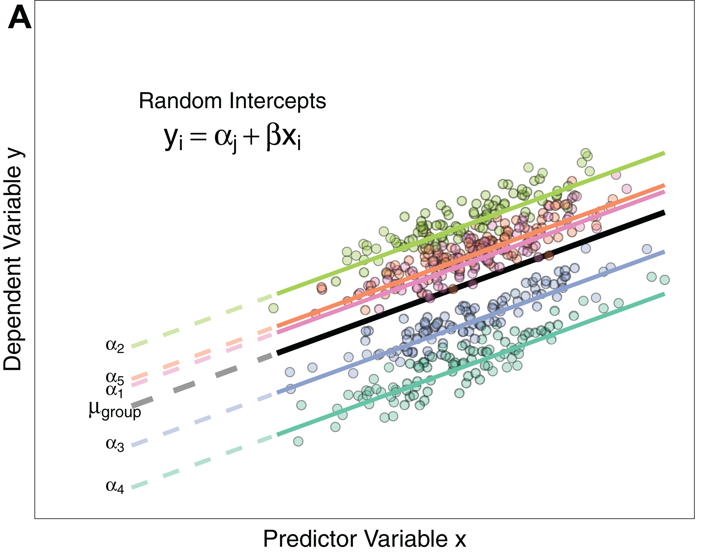

Recording disclosure
This class is being conducted in person, as well as over Zoom. As the instructor, I will be recording this session. I have disabled the recording feature for others so that no one else will be able to record this session. I will be posting this session to the course’s website.
If you have privacy concerns and do not wish to appear in the recording, you may turn video off (click “stop video”) so that Zoom does not record you.
The chat box is always open for discussion and questions to the entire class. You may also send messages privately to the instructor. Please note that Zoom saves all chat transcripts.
Slides found at: https://maryryan.github.io/PHS-651-slides/F25/lec-3-1/slides-3-1
One way to account for clustering in analysis is with a (generalized) linear mixed effects model \[g(Y_{ij}) = \color{red}{\beta_0 + U_{ij}\beta_1} + \color{blue}{Z_ib_{0i}}+ \epsilon_{ij}\] \[g(\vec{Y}_i) = \color{red}{\boldsymbol{X}_i\vec{\beta}} + \color{blue}{\vec{Z}_ib_{0i}}+\vec{\epsilon}_i\] (Transformed outcome for individual j in cluster i, modeled as a function of the exposure status for individual j in cluster i, with cluster-level random effects)
\(g(\cdot)\) is a link function that transforms the outcome
\(\color{red}{\beta_0 + u_{ij}\beta_1}\) (or \(\color{red}{\boldsymbol{X}_i\vec{\beta}}\)) are the fixed effects modeling the mean outcome response as a function of variables
\(\color{blue}{Z_i b_{0i}}\) (\(\color{blue}{\vec{Z}_ib_{0i}}\)) are the random effects accounting for random between-cluster variation
\(\epsilon_{ij}\) (\(\vec{\epsilon}_i\)) is the regular between-individual variation
We assume the outcome observations in cluster i, \(\vec{Y}_i\), follow a multivariate probability distribution
One way to account for clustering in analysis is with a (generalized) linear mixed effects model \[g(Y_{ij}) = \color{red}{\beta_0 + U_{ij}\beta_1} + \color{blue}{Z_ib_{0i}}+ \epsilon_{ij}\] \[g(\vec{Y}_i) = \color{red}{\boldsymbol{X}_i\vec{\beta}} + \color{blue}{\vec{Z}_ib_{0i}}+\vec{\epsilon}_i\]

\[\mu_{\text{group}} = \beta_0\] \[\alpha_1 = \beta_0 + b_{0i}\]
One way to account for clustering in analysis is with a (generalized) linear mixed effects model \[g(Y_{ij}) = \color{red}{\beta_0 + U_{ij}\beta_1} + \color{blue}{Z_ib_{0i}}+ \epsilon_{ij}\] \[g(\vec{Y}_i) = \color{red}{\boldsymbol{X}_i\vec{\beta}} + \color{blue}{\vec{Z}_ib_{0i}}+\vec{\epsilon}_i\]
The fixed effects are shared across everyone in the sample, while the random effects are unique to a particular cluster (however we define cluster)
Interpretations of \(\beta_1\) in an LME (identity link) are technically conditional because they are comparing 2 individuals with the same cluster membership (\(E[Y_{ij} | \boldsymbol{X}_i, b_{0i}]\))
One way to account for clustering in analysis is with a (generalized) linear mixed effects model \[g(Y_{ij}) = \color{red}{\beta_0 + U_{ij}\beta_1} + \color{blue}{Z_ib_{0i}}+ \epsilon_{ij}\] \[g(\vec{Y}_i) = \color{red}{\boldsymbol{X}_i\vec{\beta}} + \color{blue}{\vec{Z}_ib_{0i}}+\vec{\epsilon}_i\]
The fixed effects are shared across everyone in the sample, while the random effects are unique to a particular cluster (however we define cluster)
Interpretations of \(\beta_1\) in a GLMM are strictly conditional because they are comparing 2 individuals with the same cluster membership, or have the same random effect value (\(g\left(E[Y_{ij} | \boldsymbol{X}_i, b_{0i}]\right)\))
Often referred to as having individual-specific or cluster-specific interpretation
Possible to extract marginal effects from conditional models, but often complicated and prone to bias
In order to get the marginal effects, we would need to inverse-transform the outcome (undo the logit function): \[E[Y_{ij}|\boldsymbol{X}_i, b_{0i}] = \frac{\exp(\boldsymbol{X}_i\vec{\beta} + \vec{Z}_ib_{0i})}{1+\exp(\boldsymbol{X}_i\vec{\beta} + \vec{Z}_ib_{0i})}~~~~~~~ E[Y_{ij}|\boldsymbol{X}_i, b_{0i}] = \frac{\exp(\beta_0 + U_{ij}\beta_1 + Z_ib_{0i})}{1+\exp(\beta_0 + U_{ij}\beta_1 + Z_ib_{0i})}\]
and then take the marginal expectation of that:
\[\begin{align*}E[\vec{Y}_i|\boldsymbol{X}_i] &= E\left\{E[\vec{Y}_i|\boldsymbol{X}_i, b_{0i}]\right\}\\ &=E\left[\frac{\exp(\boldsymbol{X}_i\vec{\beta} + \vec{Z}_ib_{0i})}{1+\exp(\boldsymbol{X}_i\vec{\beta} + \vec{Z}_ib_{0i})}\right]\end{align*}\]
\[\begin{align*}E[Y_{ij}|\boldsymbol{X}_i] &= E\left\{E[Y_{ij}|\boldsymbol{X}_i, b_{0i}]\right\}\\ &=E\left[\frac{\exp(\beta_0 + U_{ij}\beta_1 + Z_ib_{0i})}{1+\exp(\beta_0 + U_{ij}\beta_1 + Z_ib_{0i})}\right]\end{align*}\]
This phenomenon is known as non-collapsibility
One way to account for clustering in analysis is with a (generalized) linear mixed effects model \[g(Y_{ij}) = \color{red}{\beta_0 + U_{ij}\beta_1} + \color{blue}{Z_ib_{0i}}+ \epsilon_{ij}\] \[g(\vec{Y}_i) = \color{red}{\boldsymbol{X}_i\vec{\beta}} + \color{blue}{\vec{Z}_ib_{0i}}+\vec{\epsilon}_i\]
The fixed effects are shared across everyone in the sample, while the random effects are unique to a particular cluster (however we define cluster)
Interpretations of \(\beta_1\) in a GLMM are strictly conditional because they are comparing 2 individuals with the same cluster membership, or have the same random effect value (\(g\left(E[Y_{ij} | \boldsymbol{X}_i, b_{0i}]\right)\))
Often referred to as having individual-specific or cluster-specific interpretation
Possible to extract marginal effects from conditional models, but often complicated and prone to bias
What if we want to look at the marginal effect of an exposure – one that’s averaged across all clusters?
Basic idea: we want to account for clustering of data, but make inference about population averages (marginal effects)
We’re often very interested in these in public and population health!
Not to be confused with the average treatment effect (ATE) – this is a different concept
Mean response is conditional only on the adjustment covariates we add to the mean model
Rigid distributional assumptions got in the way of this in LMEs/GLMMs
Adding random effects were how we were able to have non-0 covariance (\(Cov[Y_{ij},Y_{ik}]\ne 0\)) while still allowing for our outcome to follow a proper probability distribution
This allowed us to assume some things about our data and not have to estimate them
So for marginal models we want to use fewer distributional assumptions
\[g(\vec{Y}_i) = \boldsymbol{X}_i\vec{\beta} + \boldsymbol{Z}_ib_{0i} + \vec{\epsilon}_i\]
Recall that with LMEs and GLMMs, we modeled our systematic variation (random effects and within-cluster individual variation) as: \[\vec{b}_0 \sim N(\vec{0}, \boldsymbol{G}),~~~ \vec{\epsilon}_i \sim N(\vec{0}, \boldsymbol{R}_i=\sigma_\epsilon^2\boldsymbol{I})\]
When using random effects (like in LMEs and GLMMs), some call this modeling with G-side variance
The \(\boldsymbol{G}\) matrix with random intercepts looked like: \[\begin{bmatrix} \sigma^2_b + \sigma^2_\epsilon & \sigma^2_b & \dots & \sigma^2_b\\ \sigma^2_b & \ddots & \dots & \sigma^2_b\\ \vdots & \dots & \ddots & \vdots\\ \sigma^2_b & \dots & \sigma^2_b & \sigma^2_b + \sigma^2_\epsilon \end{bmatrix}\]
The \(\boldsymbol{R}_i = \sigma^2_{\epsilon}\boldsymbol{I}\) matrix for within-cluster individual variation looked like: \[\begin{bmatrix} \sigma^2 & 0 & \dots & 0 \\ 0 & \ddots & \dots & 0 \\ \vdots & \dots & \ddots & \vdots\\ 0 & \dots & 0 & \sigma^2 \end{bmatrix}\]
These random effects \(\vec{\gamma}\) were difficult to marginalize out of the expectation when we used a non-identity link function
What if instead we had no random effects (\(\boldsymbol{G}=0\)), and modeled non-zero covariance using \(\vec{\epsilon}_i\) and a \(\boldsymbol{R}_i \ne \sigma^2_\epsilon \boldsymbol{I}\)?
\[g(\vec{Y}_i) = \boldsymbol{X}_i\vec{\beta} + \boldsymbol{Z}_ib_{0i} + \vec{\epsilon}_i\]
Recall that with LMEs and GLMMs, we modeled our systematic variation (random effects and within-cluster variation) as: \[\vec{b}_0 \sim N(\vec{0}, \boldsymbol{G}),~~~ \vec{\epsilon}_i \sim N(\vec{0}, \boldsymbol{R}_i=\sigma_\epsilon^2\boldsymbol{I})\]
When using random effects (like in LMEs and GLMMs), some call this modeling with G-side variance
When using \(\boldsymbol{G}=0\) (no random intercepts), we call this modeling with R-side variance
Marginal modeling approaches tend to exclusively model with R-side variance
Downside: this means we’re not modeling the outcome using a proper probability distribution (more on this soon…)
There are 2 main components of a marginal model
\[Var[Y_{ij}|\vec{X}_{ij}] = \varphi v(\mu_{ij})\]
Component 2 is kind of like the systematic variation in GLMMs we saw in lecture 2.1!
For example, in a model with clustered continuous responses \(Y_{ij}\) and only one exposure \(U_{ij}\), we might have:
We specify this based on our domain knowledge, hypotheses we want to test, model-building strategies, etc
To account for confounding, we would add additional variables to the right hand side so that we correctly model the mean
2.1. \(Var[Y_{ij}|\boldsymbol{X}] = \varphi_{i} = \sigma^2\)
Clusters share a common variance, which we assume is independent of \(\mu_{ij}\)
Could also assume difference variances for each cluster, \(\sigma^2_i\)!
2.2. \(Corr[Y_{ij}, Y_{ik}] = \alpha\)
For example, in a model with clustered continuous responses \(Y_{ij}\) and only one exposure \(U_{ij}\), we might have:
2.1. \(Var[Y_{ij}|\boldsymbol{X}] = \varphi_{i} = \sigma^2\)
2.2. \(Corr[Y_{ij}, Y_{ik}] = \alpha\)
\[\begin{bmatrix} 1 & \alpha & \dots & \alpha \\ \alpha & \ddots & \dots & \alpha \\ \vdots & \dots & \ddots & \vdots\\ \alpha & \dots & \alpha & 1 \end{bmatrix}\]
If we combined 2.1 and 2.2, we get the covariance between two outcomes in the same cluster: \[\begin{align*}Cov[Y_{ij}, Y_{ik}] &= sd[Y_{ij}|\boldsymbol{X}] ~Corr[Y_{ij}, Y_{ik}] ~sd[Y_{ij}|\boldsymbol{X}]\\ &= \sqrt{\sigma^2}~ \alpha ~\sqrt{\sigma^2}\\ &=\sigma^2\alpha\end{align*}\]
which creates us a covariance matrix for cluster \(i\), \(V_i\), that looks like:
\[V_i=\begin{bmatrix} \sigma^2 & \sigma^2\alpha & \dots & \sigma^2\alpha \\ \sigma^2\alpha & \ddots & \dots & \sigma^2\alpha \\ \vdots & \dots & \ddots & \vdots\\ \sigma^2\alpha & \dots & \sigma^2\alpha & \sigma^2 \end{bmatrix}\]
We call \(V_i\) the “working” covariance matrix
which looks different than the covariance matrix we’d get from an LME:
\[\begin{bmatrix} \sigma^2_b + \sigma^2_\epsilon & \sigma^2_b & \dots & \sigma^2_b\\ \sigma^2_b & \ddots & \dots & \sigma^2_b\\ \vdots & \dots & \ddots & \vdots\\ \sigma^2_b & \dots & \sigma^2_b & \sigma^2_b + \sigma^2_\epsilon \end{bmatrix}\]
but these are actually the same if \(\sigma^2 = \sigma^2_b + \sigma^2_\epsilon\) and \(\sigma^2\alpha = \sigma^2_b\) 🤯
If we combined 2.1 and 2.2, we get the covariance between two outcomes in the same cluster: \[\begin{align*}Cov[Y_{ij}, Y_{ik}] &= sd[Y_{ij}|\boldsymbol{X}] ~Corr[Y_{ij}, Y_{ik}] ~sd[Y_{ij}|\boldsymbol{X}]\\ &= \sqrt{\sigma^2}~ \alpha ~\sqrt{\sigma^2}\\ &=\sigma^2\alpha\end{align*}\]
If we combined 2.1 and 2.2, we get the covariance between two outcomes in the same cluster: \[\begin{align*}Cov[Y_{ij}, Y_{ik}] &= sd[Y_{ij}|\boldsymbol{X}] ~Corr[Y_{ij}, Y_{ik}] ~sd[Y_{ij}|\boldsymbol{X}]\\ &= \sqrt{\sigma^2}~ \alpha ~\sqrt{\sigma^2}\\ &=\sigma^2\alpha\end{align*}\]
which creates us a covariance matrix for cluster \(i\) that looks like:
\[V_i=\begin{bmatrix} \sigma^2 & \sigma^2\alpha & \dots & \sigma^2\alpha \\ \sigma^2\alpha & \ddots & \dots & \sigma^2\alpha \\ \vdots & \dots & \ddots & \vdots\\ \sigma^2\alpha & \dots & \sigma^2\alpha & \sigma^2 \end{bmatrix}\]
which looks different than the covariance matrix we’d get from an LME:
\[\begin{bmatrix} \sigma^2_b + \sigma^2_\epsilon & \sigma^2_b & \dots & \sigma^2_b\\ \sigma^2_b & \ddots & \dots & \sigma^2_b\\ \vdots & \dots & \ddots & \vdots\\ \sigma^2_b & \dots & \sigma^2_b & \sigma^2_b + \sigma^2_\epsilon \end{bmatrix}\]
Can we assume other types of correlation/covariance structures? Yes!
The most basic (and the one we have the most prior experience with) is the independence correlation structure
\[\begin{bmatrix} 1 & 0 & \dots & 0 \\ 0 & \ddots & \dots & 0 \\ \vdots & \dots & \ddots & \vdots\\ 0 & \dots & 0 & 1 \end{bmatrix}\]
Assuming \(Var[Y_{ij}|\boldsymbol{X}] = \sigma^2\), creates a covariance matrix that looks like
\[V_i=\begin{bmatrix} \sigma^2 & 0 & \dots & 0 \\ 0 & \ddots & \dots & 0 \\ \vdots & \dots & \ddots & \vdots\\ 0 & \dots & 0 & \sigma^2 \end{bmatrix}\]
Another type is the exchangeable correlation structure (AKA: compound symmetry)
\[\begin{bmatrix} 1 & \alpha & \dots & \alpha \\ \alpha & \ddots & \dots & \alpha \\ \vdots & \dots & \ddots & \vdots\\ \alpha & \dots & \alpha & 1 \end{bmatrix}\]
Assuming \(Var[Y_{ij}|\boldsymbol{X}] = \sigma^2\), creates a covariance matrix that looks like
\[V_i=\begin{bmatrix} \sigma^2 & \sigma^2\alpha & \dots & \sigma^2\alpha \\ \sigma^2\alpha & \ddots & \dots & \sigma^2\alpha \\ \vdots & \dots & \ddots & \vdots\\ \sigma^2\alpha & \dots & \sigma^2\alpha & \sigma^2 \end{bmatrix}\]
Could you assume all observations are (potentially) related to each other in different ways?
\[\begin{bmatrix} 1 & \alpha_{12} & \dots & \alpha_{1n} \\ \alpha_{21} & \ddots & \dots & \alpha_{2n} \\ \vdots & \dots & \ddots & \vdots\\ \alpha_{n1} & \dots & \alpha_{n(n-1)} & 1 \end{bmatrix}\]
Assuming \(Var[Y_{ij}|\boldsymbol{X}] = \sigma^2\), creates a covariance matrix that looks like
\[V_i=\begin{bmatrix} \sigma^2 & \sigma^2\alpha_{12} & \dots & \sigma^2\alpha_{1n} \\ \sigma^2\alpha_{21} & \ddots & \dots & \sigma^2\alpha_{2n} \\ \vdots & \dots & \ddots & \vdots\\ \sigma^2\alpha_{n1} & \dots & \sigma^2\alpha_{n(n-1)} & \sigma^2 \end{bmatrix}\]
But also requires you to estimate every correlation parameter in this matrix separately
Could you assume all observations are (potentially) related to each other in different ways?
\[\begin{bmatrix} 1 & \alpha_{12} & \dots & \alpha_{1n} \\ \alpha_{21} & \ddots & \dots & \alpha_{2n} \\ \vdots & \dots & \ddots & \vdots\\ \alpha_{n1} & \dots & \alpha_{n(n-1)} & 1 \end{bmatrix}\]
Assuming \(Var[Y_{ij}|\boldsymbol{X}] = \sigma^2\), creates a covariance matrix that looks like
\[V_i=\begin{bmatrix} \sigma^2 & \sigma^2\alpha_{12} & \dots & \sigma^2\alpha_{1n} \\ \sigma^2\alpha_{21} & \ddots & \dots & \sigma^2\alpha_{2n} \\ \vdots & \dots & \ddots & \vdots\\ \sigma^2\alpha_{n1} & \dots & \sigma^2\alpha_{n(n-1)} & \sigma^2 \end{bmatrix}\]
So we have the main components of a marginal model
The marginal expectation of the outcome: \(g(E[Y_{ij}| \vec{X}_{ij}]) = g(\mu_{ij}) = \vec{X}_{ij}\vec{\beta}\)
The covariance of the outcome
The marginal variance of the outcome: \(Var[Y_{ij}|\vec{X}_{ij}] = \varphi v(\mu_{ij})\)
The within-cluster association of the outcomes (correlation structure)
But how do we use these components to estimate our regression coefficients?
Thus is born generalized estimating equations
Generalized estimating equations (GEEs) find the \(\beta\) that solves an estimating equation of the general form: \[\sum_{i=1}^N \left(\frac{\partial \mu_i}{\partial \beta}\right)^T V_i^{-1}[y_{ij} - \mu_{ij}(\vec{\beta})] = 0\]
Difference here: \(V_i\) is the working covariance for the outcome
Explicitly accounts for models of outcome variance and within-cluster association (components 2.1 and 2.2)
\[V_i = sd[Y_{ij}|\boldsymbol{X}] ~Corr[Y_{ij}, Y_{ik}] ~sd[Y_{ij}|\boldsymbol{X}]\]
Called “working” to distinguish it from the true covariance matrix of \(\vec{Y}_i\)
Generalized estimating equations (GEEs) find the \(\beta\) that solves an estimating equation of the general form: \[\sum_{i=1}^N \left(\frac{\partial \mu_i}{\partial \beta}\right)^T V_i^{-1}[y_{ij} - \mu_{ij}(\vec{\beta})] = 0\]
Since this estimating equation only depends on the mean \(\mu_{ij}(\cdot)\) and the working (co)variance \(V_i\), a GEE doesn’t have to correspond to a full likelihood/distribution like a GLMM does
This means we have fewer assumptions about how \(Y_{ij}\) behaves
Also lets us “mix and match” different forms for the marginal model components into this one estimating equation
e.g., we don’t need to theoretically derive the covariance - we can just approximate it using the variance and the chosen correlation structure
Generalized estimating equations (GEEs) find the \(\beta\) that solves an estimating equation of the general form: \[\sum_{i=1}^N \left(\frac{\partial \mu_i}{\partial \beta}\right)^T V_i^{-1}[y_{ij} - \mu_{ij}(\vec{\beta})] = 0\]
Since this estimating equation only depends on the mean \(\mu_{ij}(\cdot)\) and the working (co)variance \(V_i\), a GEE doesn’t have to correspond to a full likelihood/distribution like a GLMM does
What’s the effect of this?
We noted that GEEs are marginal models while GLMMS are conditional models…
What are some other differences between GEEs and GLMMs?
| GEE | GLMM | |
|---|---|---|
| Interpretation | “Population”-level | Cluster-level |
| Accounting for correlation | Empirical estimation | Specification of random effects |
| Assumptions | Weak assumptions; more robust (correlation structure, over-dispersion) | Strong assumptions; less robust |
| Sample size requirements | Moderately large (\(n > 50\)) | Works with smaller numbers of clusters provided that the entire model is correctly specified |
| Computational burden | Light | Heavy |
| Cluster-level prediction? | No | Yes |
Big take away: GLMMs and GEEs aren’t so much different models, as different ways of estimating models
GEEs are often touted as having “population”-level interpretations as opposed to GLMMs cluster-level ones
Our estimates (and our interpretations!) are only as good as our data, though
If the data we’re using to build a GEE isn’t representative of the population we’re interested in, it’s not going to magically give us results generalizable to the population
A more accurate description would be that GEEs give us sample-population-level interpretations while GLMMs give us sample-cluster-level interpretations
Let’s use our old Minnesota radon data we used back in lecture 1.2
We’d assume:
Mean model:
Variance:
Correlation structure:
Let’s use our old Minnesota radon data we used back in lecture 2.1
We’d assume:
Mean model: \(E[\text{log radon}_{ij}|\vec{X}_{ij}] = \beta_0 + \beta_1(\text{floor}_{ij})\)
Variance: \(Var[Y_{ij}] = \sigma^2\)
Correlation structure: exchangeable (just one correlation parameter to estimate)
Let’s run it:
library(gee)
# run a GEE with exchangeable correlation clustered on counties #
radon_gee <- gee( log_radon ~ floor,
id=cntyfips, # cluster ID needs to be a number, not names or categories
data=radon.mn, corstr="exchangeable" )(Intercept) floor
1.3624099 -0.5864218 Estimate Naive S.E. Naive z Robust S.E. Robust z
(Intercept) 1.5011024 0.05525251 27.16804 0.05101495 29.424759
floor -0.6698925 0.06583761 -10.17492 0.07746389 -8.647803\(\beta_1\): -0.6699
Ignore the “naive” and “robust” SEs for now – we’ll talk about that more on Thursday
Let’s compare our GEE result with what we would get from an LME:
library(lme4)
# run a LME with random county intercepts #
radon_lme <- lmer( log_radon ~ floor + (1|county),
data=radon.mn )
summary( radon_lme )$coef Estimate Std. Error t value
(Intercept) 1.4923932 0.04955304 30.117088
floor -0.6628887 0.06765334 -9.798315Exchangeable GEE \(\beta_1\): -0.6699
LME \(\beta_1\): -0.6629
Not that different on point estimates!
Where we’ll likely see the biggest differences is in the inference/95% CIs/standard errors… more on than Thursday